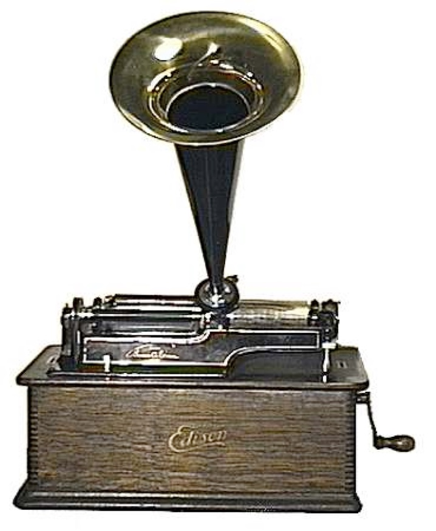
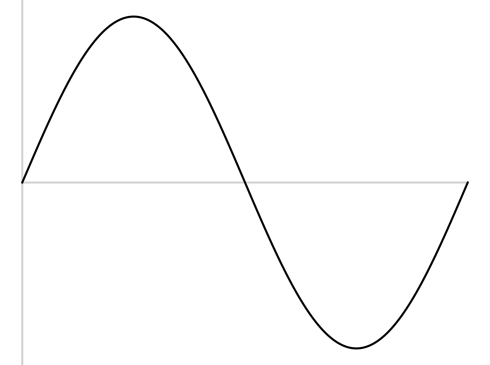
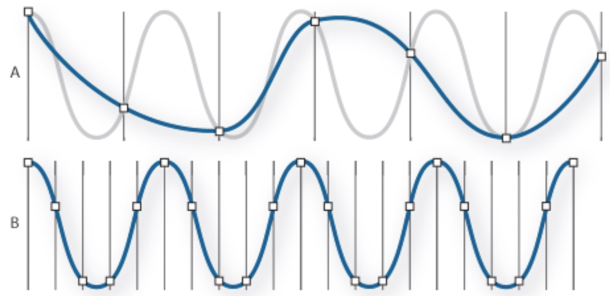

Capturing Pressure variations
Computer Audio, Sampling, and Quantization

For most of our species history, this wasn’t a thing
How do we capture and recreate the pattern of sound pressure?


The stylus wears away the groove
The power of the air pressure limited the strength of the medium
‘The Lost Chord’ by Arthur Sullivan (1888)
You want a soft medium for capture
… and a hard medium for playback
Air pressure only provides so much power

Electrical signals are easy to amplify
… and easier to store
A Microphone transduces air pressure patterns into electrical patterns
‘Give me a pattern of voltage that matches the pattern of compression and rarefaction’
Air pressure pushes a membrane, moving a coil of wire around a magnet, inducing voltage
Durable, but less sensitive

You can amplify it, transmit it, modify it and store it
You can even recreate the air pressure movements
“When this signal gets stronger, make this other one stronger still”
“Increase the voltage of this signal and send it down the line”
This can be done in many ways, but it’s (relatively) easy and doesn’t require computers
Dynamic microphones in reverse
Changes in voltage move a membrane attached to a coil
This ‘kicks’ the air in the desired pattern of compression


Magnetic field strength on tapes
… and more!


010001110010101000100101101010101010
Also known as ‘digitization’, ‘discretization’, or ‘sampling’
“Let’s just measure the sound a LOT and store those values”



Sample the wave many times per second
Record the amplitude at each sample
The resulting wave will faithfully capture the signal
This is called the ‘Sampling Rate’
Measured in samples per second (Hz)
This is the same question as ‘how often do I collect data from my population?’



| ### Good sampling rates capture the necessary set of frequencies |
|


The highest frequency captured by a sample signal is one half the sampling rate
Perfect capture of the wave isn’t possible (in a digital space)
… but as long as you know your goal, you can capture it mathematically good enough
Don’t try to sample perfectly, just know your frequency range and nyquist it!
44,100 Hz
22,050 Hz
11,025 Hz
6000 Hz
44,100 Hz
6000 Hz
3000 Hz
1500 Hz
800 Hz
Recreate the signal from the points, and then amplify it
This is ‘Digital to Analog Conversion’
It’s not particularly hard!
CDs are at 44,100 Hz
DVDs are at 48,000 Hz
High-End Audio DVDs are at 96,000 Hz
Some people want 192,000 Hz
Take a sampled wave and sample it again
Downsampling reduces the amount of detail stored
Upsampling increases the frequency of samples stored
Why is upsampling not actually increasing detail stored?
Why is this true?
What does it affect?
Many microphones ‘roll off’ above 10kHz, 8kHz, even 6kHz
Some software isn’t set up for higher sampling rates
Many speech tools require you to downsample to use them
We want to store individual values for amplitude
We want to store values with enough precision to capture the wave well
… but more precision means more numbers (which need more space to store!)
We need to find the right bit depth
How many bits of amplitude information do we store for each sample?
4 bits gives 16 ‘levels’
16 bits gives 65,563 levels
24 bits gives 16,777,216 levels
If it’s not spoken of, it’s 16 bit
There’s no reason to go higher, practically
Don’t go lower!
“ADC” or “AD” chips go from analog signals to digital samples
“DAC” or “DA” chips reverse the process, and create analog signals from digital samples
Every digital device that uses sound needs both
They can vary some in quality
Any audible audio signal can be captured digitally, c.f. the nyquist theorem
We can capture greater bit depth than we can hear
‘More detail’ means ‘the noise and distortion I appreciate’
Audiophiles are generally slightly insane
WAV files are effectively large lists of amplitudes, with a sampling rate and channel info at the top
AIFF is the same idea, but Apple’s own format
You can freely and losslessly turn WAV into AIFF and vice versa
You should be a bit scared of any device which won’t give you WAV or AIFF or FLAC
Every last one of them!
Airpods and Phones and USB-to-Headphone adapters have onboard ADC/DAC chips
Bit depth is how much detail is stored about sounds
Bit rate is a property of compressed files which says “How much are we storing per $TIME”
Uncompressed files have bit depth, not bit rate
Compressed files have both!
We sample, over and over
The Sampling Rate controls what frequencies we can capture
The Bit Depth controls how detailed we are about amplitudes
Sound files are just lists of measurements
Every computer that does anything with sound, does this!